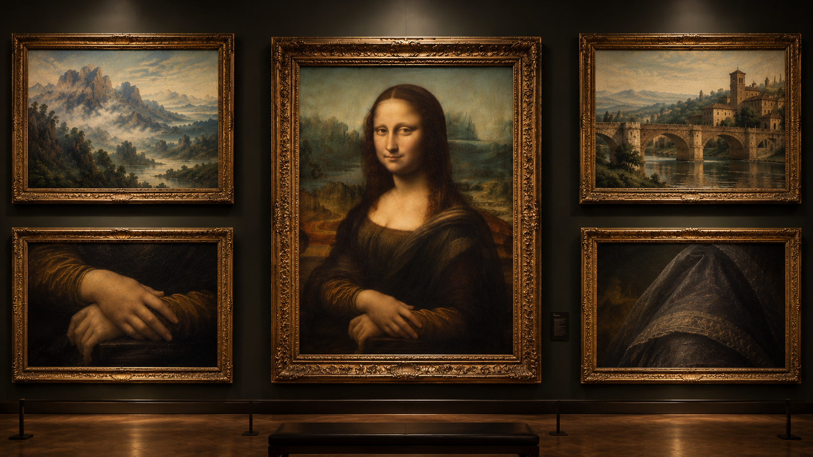

1. Montanhas Nebulosas
Paisagem ao fundo da pintura, composta por montanhas, vales e águas sinuosas. A perspectiva atmosférica utiliza tons azulados e esmaecidos para transmitir profundidade e distância.
2. Ponte histórica
Elemento arquitetônico da paisagem posterior, representado por uma ponte de pedra sobre um curso d’água. Sua integração ao cenário contribui para a perspectiva e a profundidade visual da composição.
3. Olhar e Sorriso
Retrato central da Mona Lisa, de Leonardo da Vinci, caracterizado pela técnica do sfumato, que suaviza as transições entre luz e sombra, criando uma expressão facial sutil e enigmática.
4. Mãos Cruzadas
As mãos da Mona Lisa estão posicionadas uma sobre a outra, com anatomia cuidadosamente representada, iluminação suave e transições graduais de sombra, evidenciando o domínio técnico de Leonardo da Vinci.
5. Manto Renascentista
Tecidos escuros que envolvem a cabeça e o corpo da personagem, representados por variações sutis de tonalidade, dobras e sombras. A técnica pictórica enfatiza a textura dos tecidos e o volume da vestimenta.